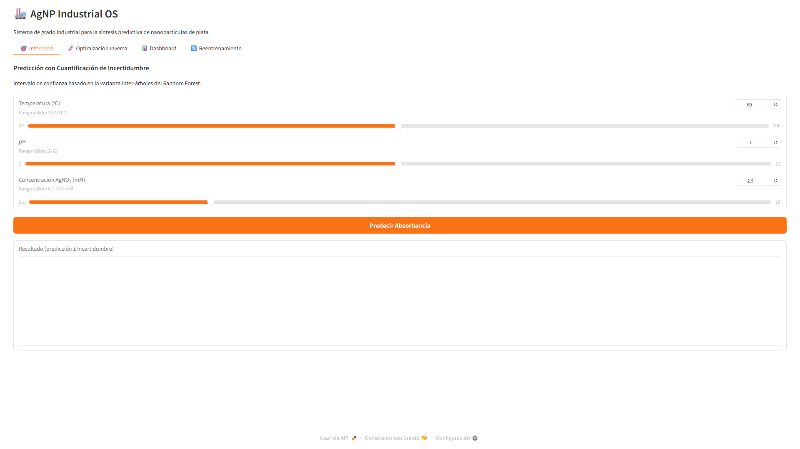
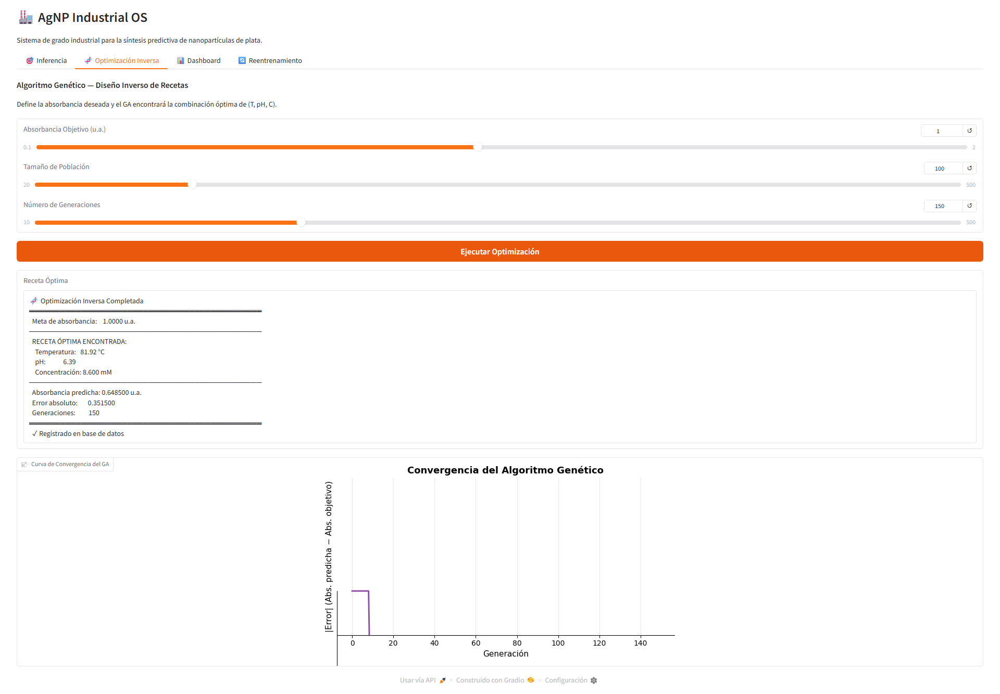
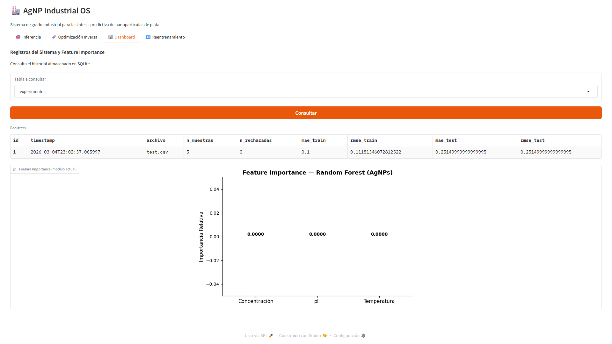

Estudiante de 6º semestre de Ingeniería en Materiales (IMT). Mi núcleo es la resolución pragmática de problemas en I+D Industrial mediante automatización e IA, aplicando modelos predictivos en aleaciones como el acero AISI 4140 y en el desarrollo de celdas fotovoltaicas biogénicas (CIDIT).
[Descargar CV Técnico PDF][01] Motor LIG: Optimización
Grafeno Inducido por Láser I+DOptimización estocástica de parámetros de síntesis (Potencia, Velocidad, DPI) para el desarrollo de supercapacitores de grafeno inducido por láser (LIG) en sustratos poliméricos. Maximización de capacitancia específica mediante modelado de superficies de respuesta.


> Ecosistema de Proyectos [Catálogo Local de I+D]
[02] Análisis Metalográfico con IA (ASTM E112 / E562)
Antigravity ArchitectureDigitalización y cuantificación automatizada de parámetros metalúrgicos. Clasificación de fases y planimetría de tamaño de grano (ASTM E112) mediante arquitecturas de segmentación profunda.
Motor Matemático: Integración de procesamiento óptico vectorial (Gaussian Blur
3x3, CLAHE) con inferencia Float16 vía MobileSAM. El algoritmo aplica
clasificación termodinámica hipereutectoide diferenciando fases perlíticas y cementíticas
mediante histogramas y filtros de barrera absoluta (≥80% ROI_exclusion).


[03] Sistema Operativo Industrial AgNP
Química Verde Nanotecnología Optimización PredictivaPipeline robusto de síntesis y caracterización de nanopartículas de plata (AgNPs) biogénicas usando extractos etanólicos vegetales.
Infraestructura: Subsistema operativo que procesa ingestión masiva de archivos físicos de caracterización (Lichen biomass, Annona muricata) habilitando diseño inverso a través de hiper-parámetros predictivos de síntesis química.



[04] Analizador IA NOM-035-STPS-2018
NLP Pysentimiento STPS Compliance RAG HíbridoMonitor transaccional para la evaluación estricta de factores de riesgo psicosocial en entornos de manufactura pesada y forja, bajo cumplimiento normativo STPS.
Arquitectura Pipeline: Emplea un análisis de sentimiento base tipo Transformer (BETO) acoplado a un motor RAG asíncrono con Ollama (Phi3.5). Opera sobre una topología SQLite local anonimizada criptográficamente (SHA-256) para salvaguardar el escrutinio normativo de recursos humanos.